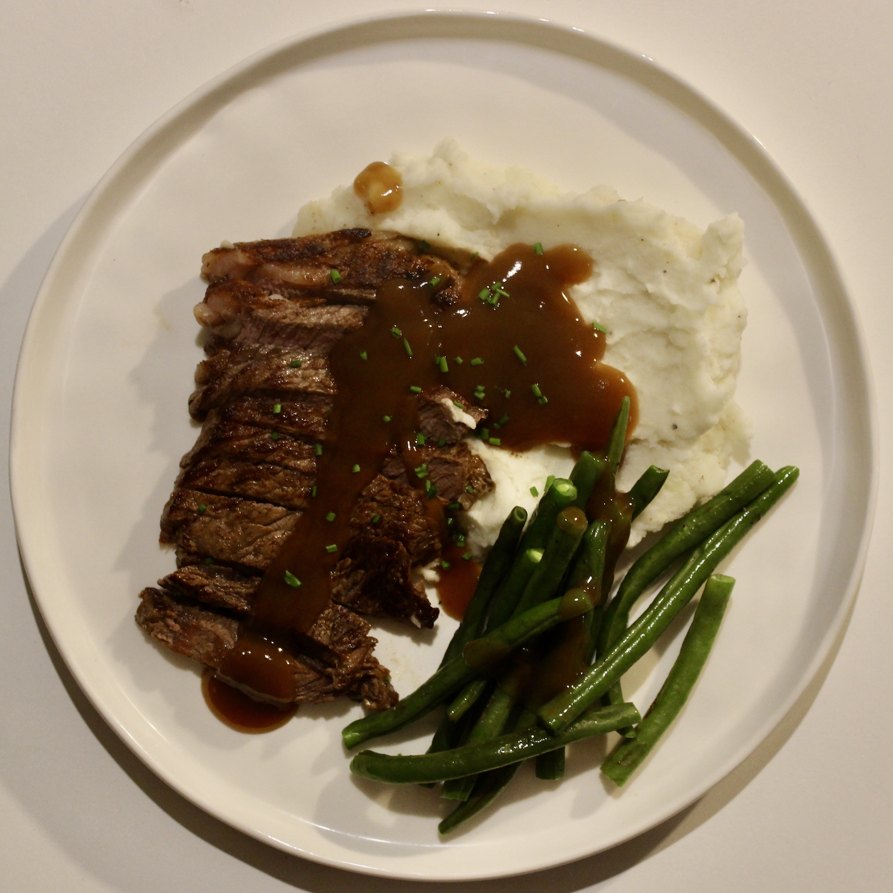

A proper comfort-food plate: steak seared in a hot pan or on the grill, buttery mash, beans finished in the pan and plenty of gravy.

Servings
2 servings
Quick Stats
40 mins • High Protein • Base: 2 servings
Ingredients
2 steaks
500g potatoes
100ml milk
40g butter
250g green beans
1 batch gravy, homemade or packet
1 tbsp oil, plus salt and pepper
Method
Make the mash: Peel and chop the potatoes. Boil in salted water until tender, drain well, then mash with the milk and butter. Season and keep warm.
Cook the steak: Pat the steaks dry and season generously. Sear in a very hot pan or cook on a hot grill until done to your liking. Rest for 5 to 10 minutes before serving.
Finish the beans: Boil the beans in salted water until just tender, then drain. Add them to the steak pan and sear briefly so they pick up the browned flavour.
Make the gravy: Use the pan juices for a homemade gravy, or prepare a packet gravy. Serve generously over the steak and mash.
Tips
Letting the steak rest keeps it juicy and gives you time to finish the beans and gravy.
For a richer mash, add extra butter or replace some of the milk with cream.